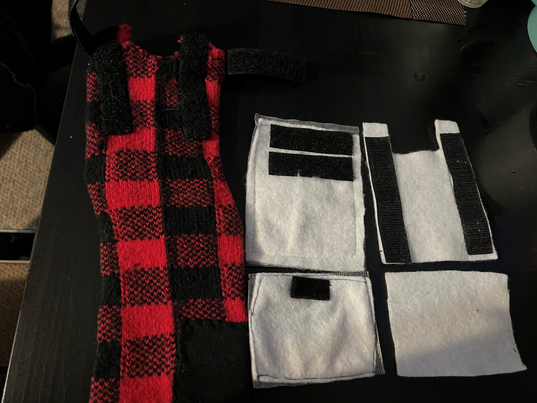
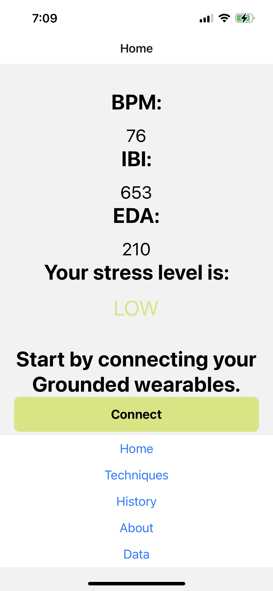

Mechanical
Black elastic and Velcro was added as needed to the design to
allow for secure fit of the sensors and accommodation to any foot
size. Velcro was added to the electronics strap to allow for
electrical component attachment to physical design. The CAD was
also modified to reflect the design changes.

Electrical
Ordered and waiting for parts to arrive. Assisting with sensor
calibration and mechanical design in the meantime.
Software
This week we finished the stress recognition aspect of the
project. The ESP32 polls the biometric sensors and sends this data
via BLE to the mobile app. The app then sends the data to the
Flask API which returns the prediction model results. These
results are then displayed live on the app.
